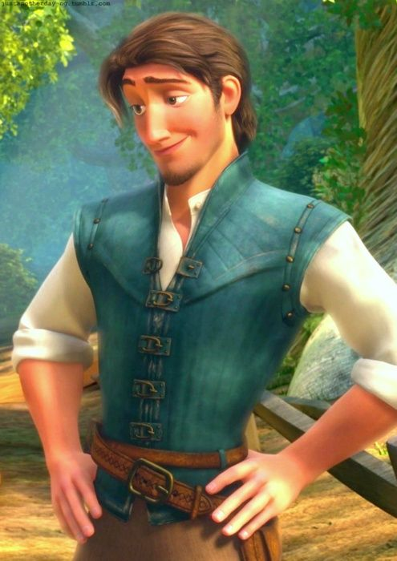

Sobre o Filme
Enrolados é a encantadora história de Rapunzel, uma jovem com cabelos mágicos que anseia por liberdade e aventura. Com a ajuda do carismático Flynn Rider, ela embarca em uma jornada inesquecível repleta de desafios, romance e muitas lanternas flutuantes.
Personagens Principais
Rapunzel

A princesa de cabelos mágicos que sonha em ver as lanternas flutuantes.
Flynn Rider
O charmoso ladrão que se torna o improvável aliado de Rapunzel.
Pascal
O fiel camaleão companheiro de Rapunzel.
As Lanternas Flutuantes
Um dos momentos mais icônicos de Enrolados são as lanternas flutuantes, representando esperança, amor e liberdade.